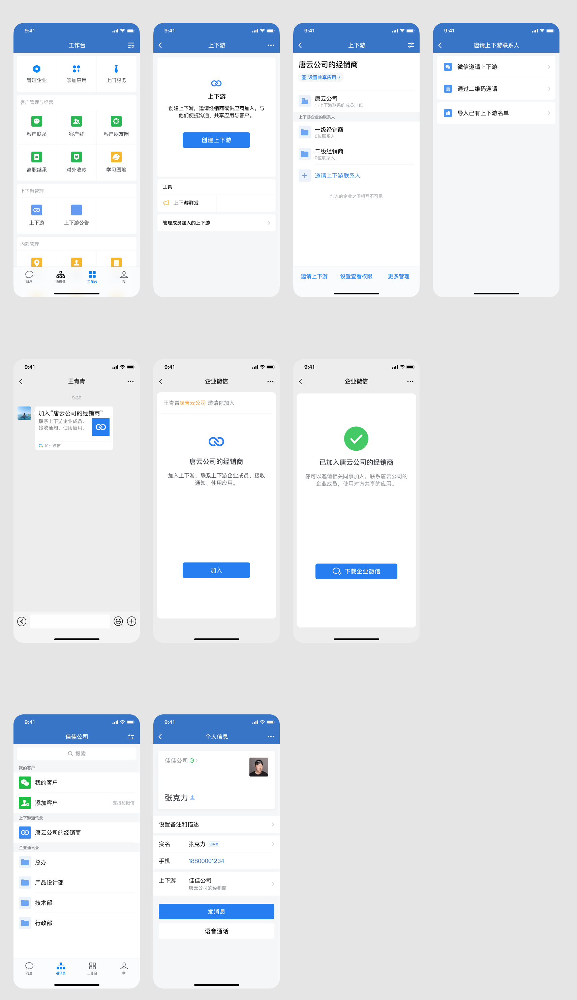
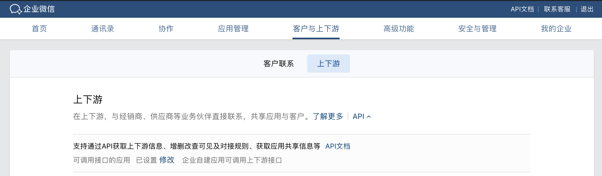

目录
「上下游」是什么？如何创建、使用「上下游」？如何共享应用？共享应用在上下游场景下可以做什么？开发者如何适配？ 概述 详述 1、应用共享成功回调 2、获取应用共享信息 3、获取应用使用者信息 4、调用接口 使用API接口 使用JSAPI接口 使用小程序接口 5、上下游的回调事件配置可调用接口的应用
「上下游」是什么？
「上下游」是企业微信针对企业间协作场景推出的解决方案。
企业可使用此功能，与自己的经销商、供应商、合作伙伴便捷沟通、共享应用，实现高效业务协同。
如何创建、使用「上下游」？
- 打开企业微信手机客户端-工作台，找到「上下游」应用；
- 创建一个上下游；
- 点击「邀请上下游联系人」，发送邀请链接给本企业的经销商、供应商、合作伙伴联系人；
- 对方确认后，即可在通讯录中找到对方并发起沟通。

注意：
* 客户端需升级到 3.1.20 以上版本
* 行业为「教育-学前教育、初中等教育、教育行政单位」的企业成员，以及团队形态的成员暂不支持创建和加入上下游
如何共享应用？
- 打开企业微信手机客户端-工作台，找到「上下游」应用
- 点开一个本企业创建的上下游
- 点击「设置共享应用」
- 选择需共享的应用、设置共享范围，完成共享
- 上下游企业成员可在企微客户端-工作台查看和使用被共享的应用
共享应用在上下游场景下可以做什么？
- 跨企业获取信息
上下游信息
上下游联系人信息
上下游联系人添加的客户信息（可跨企业打通客户数据） - 跨企业业务协同
群发通知（应用消息）
打开/创建上下游会话（单聊、群聊）
客户管理
设置群发任务（单聊、群聊、朋友圈）
打开/创建客户会话（单聊、群聊）
在职、离职继承
客户联系统计
日程、会议、直播、审批、紧急通知等系统功能均支持跨企业调用
开发者如何适配？
概述
- 上下游共享应用成功，有回调事件
- 获取下游企业 corpid、应用 id
- 获取应用使用者信息
- ISV/上游企业支持以下游企业身份调用 API
- 通讯录、客户联系的回调，都回调给上级企业
详述
1、应用共享成功回调
上游企业将应用共享给下游企业后，需使用特定接口获取下游应用的身份和权限，才能控制下游应用，因此需开发者做一定的适配。
- 自建应用，上游企业共享给下游企业后，企业微信会回调应用共享事件给上游企业。
上游企业收到回调事件后，可通过相应的API接口进行业务开发。
需特别注意，企业微信账号ID安全性已全面升级，上游企业获取到下游企业的账号ID规则与第三方服务商获取到的账号ID规则是一样的，详情可以参考企业微信账号ID安全性全面升级。 - 第三方应用，上游企业共享给下游企业后，企业微信会为每个下游企业分别安装授权该第三方应用，并回调授权通知给第三方，所以相当于是多了一种授权安装的渠道。
不同的是，该情况下企业微信还会回调共享应用事件给第三方应用，之后第三方应用可获取应用共享信息，以及获取下游企业付费版本信息。
下面简要说明需要注意的地方。
2、获取应用共享信息
上游企业共享应用给下游企业后，会收到共享应用事件回调，此时上游企业需要通过接口：获取应用共享信息，获得下游已授权企业的corpid和应用id列表，并保存起来，后面调接口需要用到。
3、获取应用使用者信息
因为应用可以共享给多个下游企业，所以上游企业调用接口前，需要得知当前使用者到底属于哪个企业。
见身份验证相关接口。与普通应用使用方法的不同点在于：
4、调用接口
使用API接口
使用JSAPI接口
使用小程序接口
5、上下游的回调事件
上下游应用统一由上游企业管理，所以下游企业的应用事件、应用消息均回调给上游企业。请注意以下几点：
- 应用事件回调（包括通讯录变更事件、客户联系变更事件等）
第三方应用无变化；
对于自建应用，所有下游企业的用户产生的应用事件，均回调给上游企业的回调URL，而事件里的企业信息是下游企业的信息。
例如成员关注及取消关注事件：
<xml>
<ToUserName><![CDATA[toUser]]></ToUserName>
<FromUserName><![CDATA[UserID]]></FromUserName>
<CreateTime>1348831860</CreateTime>
<MsgType><![CDATA[event]]></MsgType>
<Event><![CDATA[subscribe]]></Event>
<AgentID>1</AgentID>点击复制
事件中ToUserName是下游企业corpid，FromUserName是下游企业的密文userid
- 共享应用事件（本次新增）
当应用分享或解除分享后，会触发该事件给上游企业或第三方服务商。收到该事件后，需要调用获取应用共享信息更新应用的分享列表并存储。
第三方应用共享应用事件回调。当上游企业管理员在管理端分享(或解除分享)应用给下游企业后（若需要敏感权限需下游企业确认），会推送该事件给服务商。
自建应用共享应用事件回调。当上游企业管理员在管理端分享(或解除分享)应用给下游企业后（若需要敏感权限需下游企业确认），会推送该事件给上游企业。
- 版本变更事件
对于付费购买的第三方应用，上游企业付费等行为产生应用版本变更后，所有下游企业均会产生版本变更事件给服务商
- 消息回调
第三方应用无变化；
对于自建应用，所有下游企业的回调消息均推送给上游企业的回调URL，而消息里面的企业信息是下游企业的信息。
配置可调用接口的应用
管理员进入企业微信管理后台后点击“客户与上下游”-“上下游”页面，点开“API”小按钮，在“可调用接口的应用”中选择自建应用，配置后该应用才可以调用上下游的接口。仅可配置一个应用
